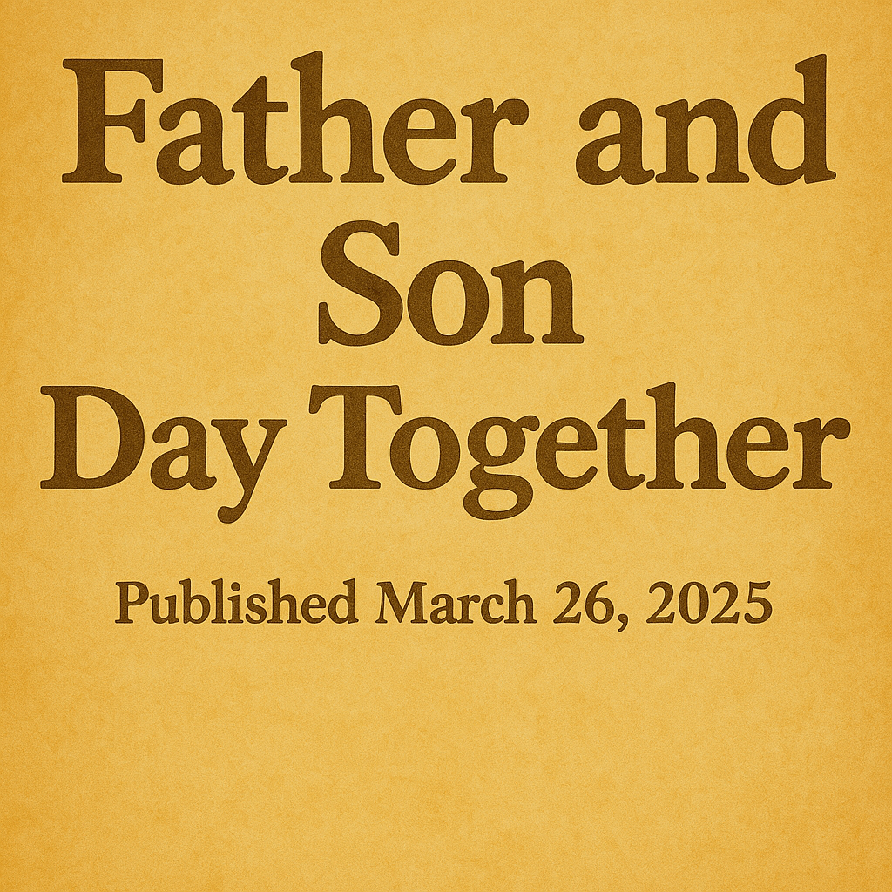
By Christopher Vaccaro
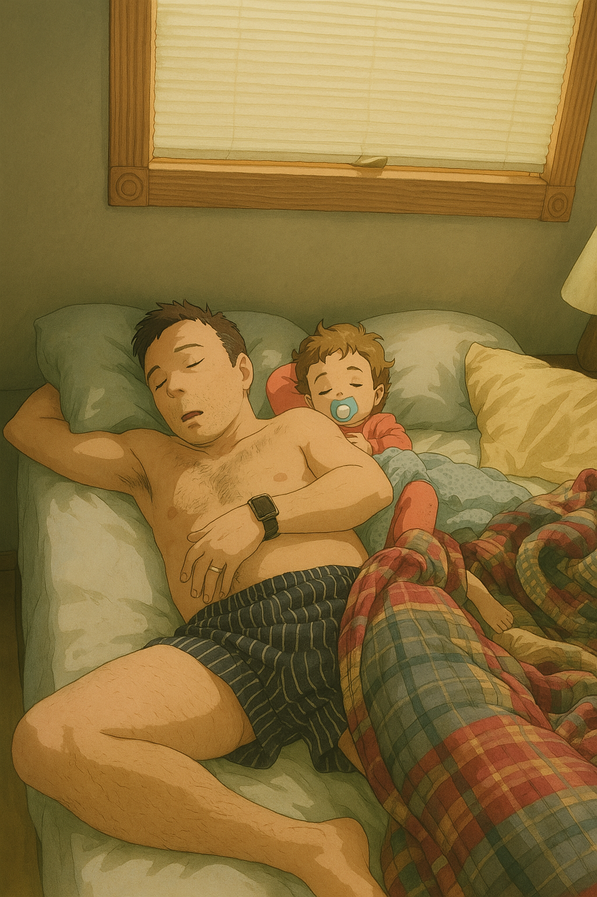
Early morning light spills into the room as a father and his young son share a peaceful moment, still wrapped in sleep. It’s a quiet pause before the excitement of the day ahead—one filled with play, laughter, and time together.
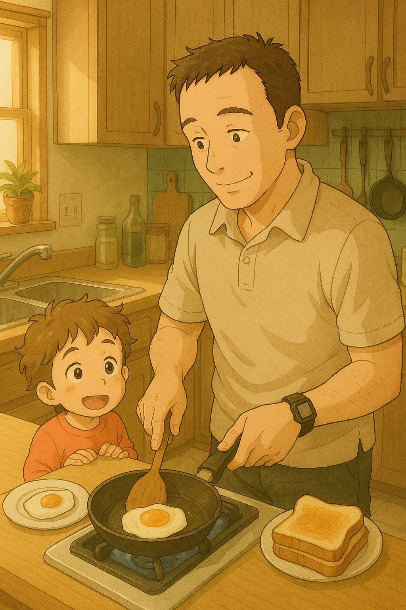
With the morning sun streaming through the window, a father makes breakfast while his son watches with eager eyes. The sizzle of eggs and the smell of toast fill the kitchen—the perfect start to their day of adventures.
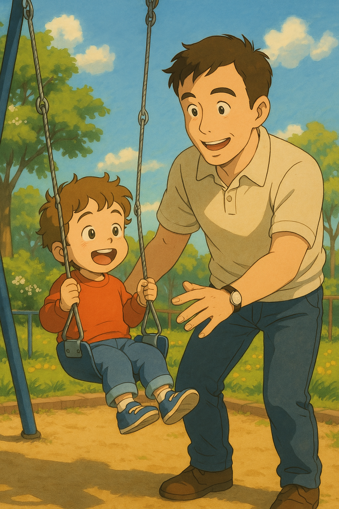
At the playground, the father gives his son a big push on the swing, both of them smiling wide under the clear blue sky. The boy’s laughter fills the air, soaring higher with each swing as their perfect day continues.
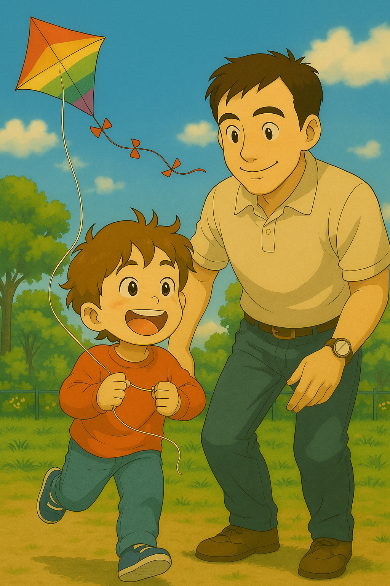
The wind picked up just right as the boy took off running, gripping the string of his colorful kite. His father followed closely behind, smiling with pride. With every step, the kite soared higher—and so did their laughter.
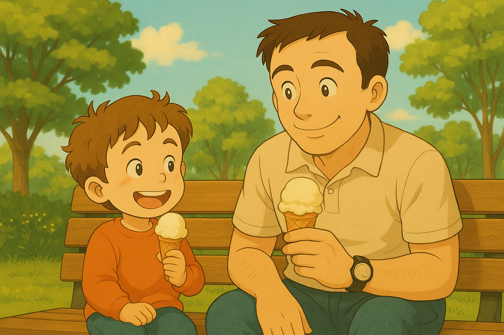
After a long day of playing, exploring, and laughter, the father and son took a well-earned break on a park bench. With ice cream cones in hand and smiles on their faces, they shared one last treat before heading home—soaking in the sunshine and each other's company.
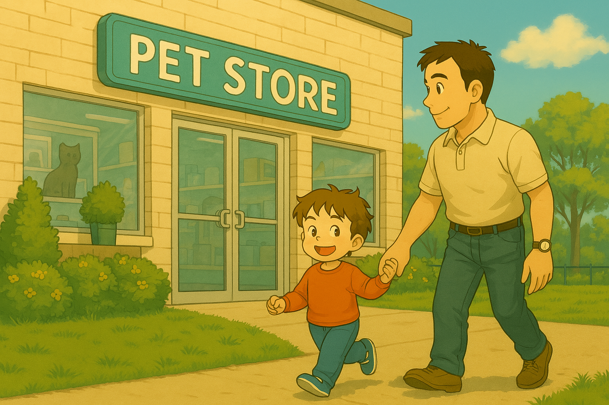
Hand in hand, they walked toward the pet store, the boy's eyes wide with curiosity. He didn't know it yet, but today would be the day he'd meet a tiny new friend who'd change everything.
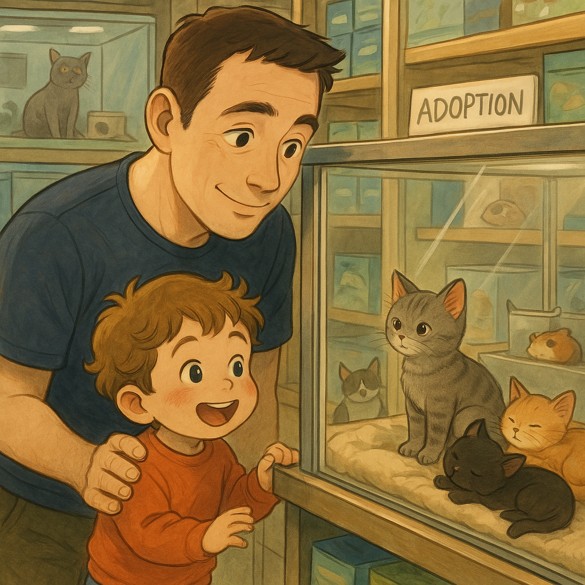
Later that day, they stopped at the pet store 'just to look'—but the moment the little boy saw the kittens, especially the tiny black one curled up in the corner, his heart was set. One look was all it took to know a new friend was coming home.
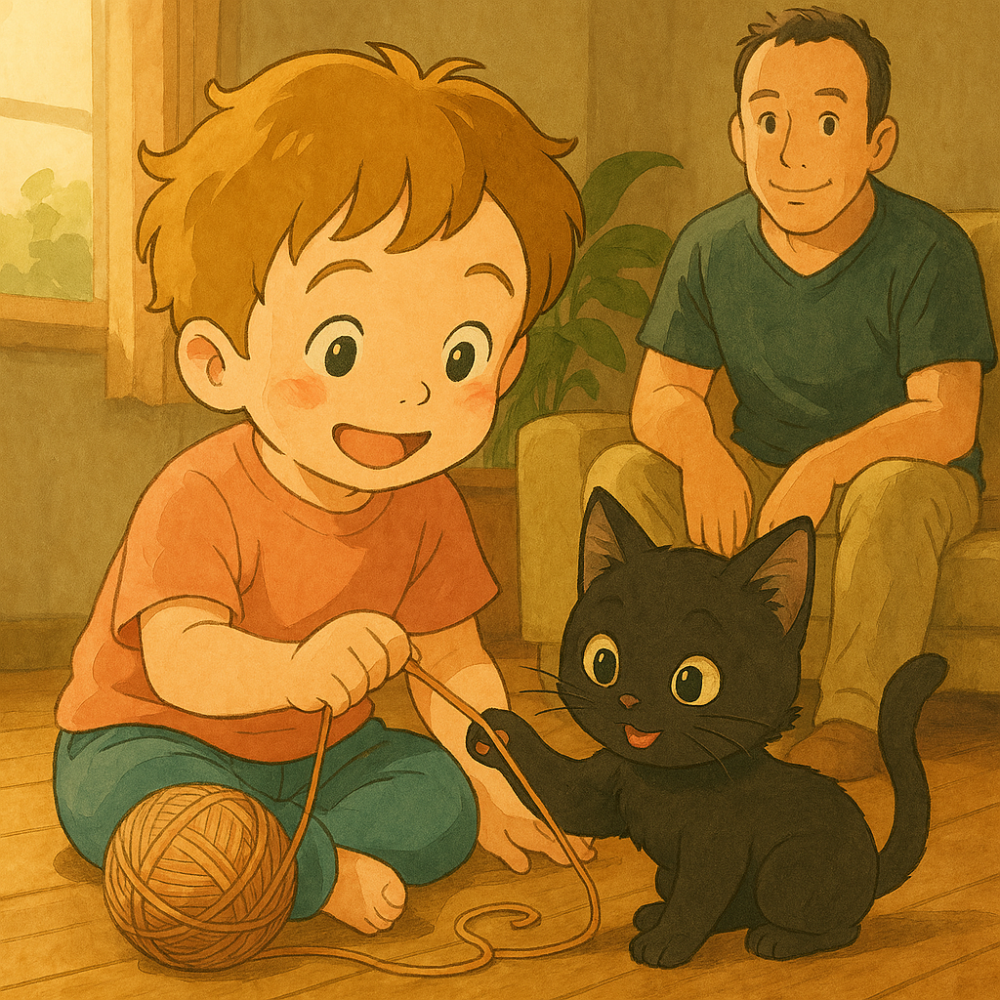
Back at home, the boy and his new kitten became fast friends. With a ball of yarn and a heart full of excitement, he played on the floor while Dad watched nearby, smiling as their bond began to grow right before his eyes.
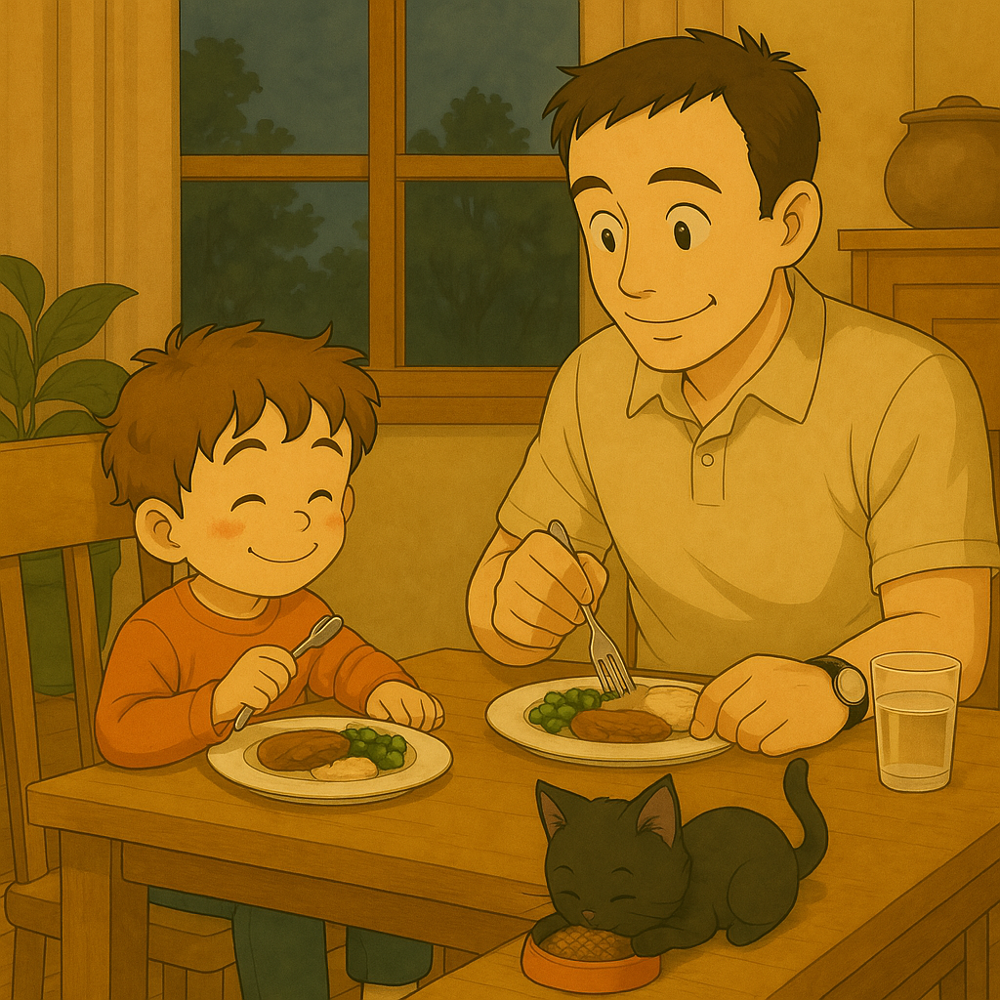
As the evening settled in, the father and son sat down to enjoy a warm meal together. Beneath the table, their new kitten crunched contentedly on its own dinner—three hearts full, three bellies fuller, all under one roof.
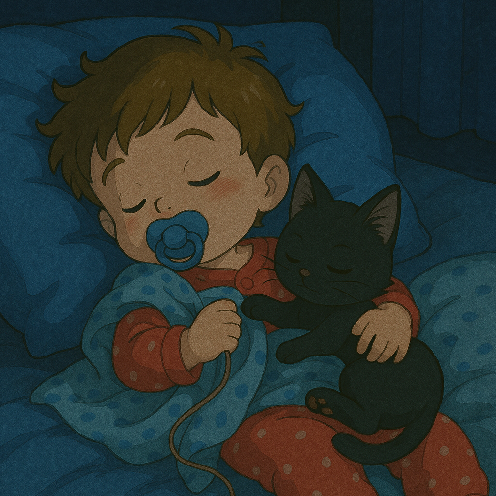
As night fell, the little boy curled up in bed with his new kitten snuggled close. With his blanket in hand and pacifier in place, he drifted off into dreams, the soft purring of his furry friend keeping him safe and warm through the night.